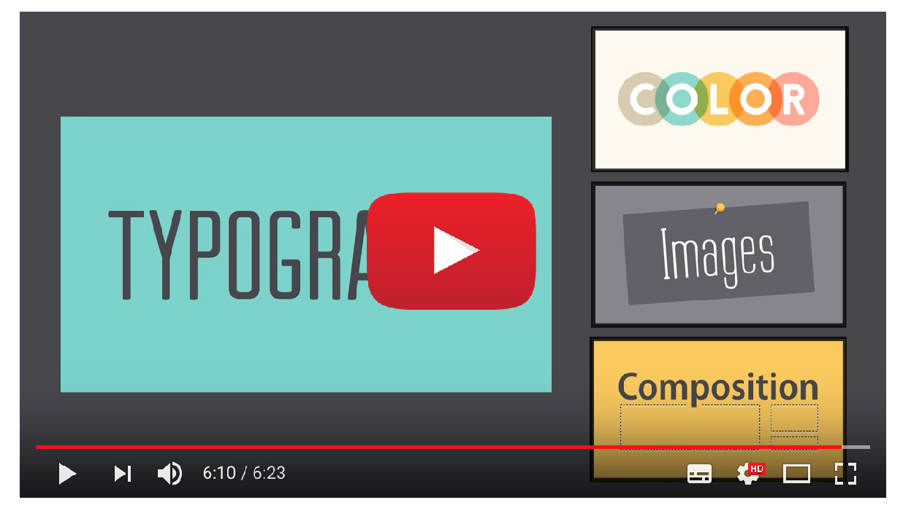
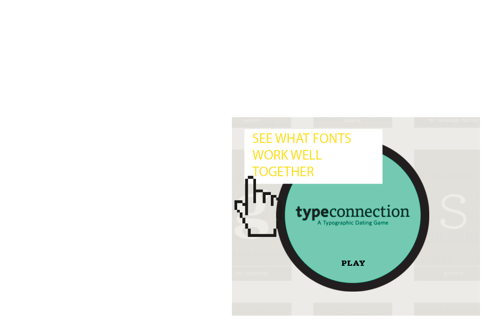

Rules of Good Design

Consistency
- Consistency – in any typographical work the consistent use of typefaces, kerning, leading, bullets and formatting is critical. Consistency makes the work look professional and keeps your readers focused on the content and not the formatting.
Hierarchy
- Hierarchy – it is important that your text gets read in the order that it’s meant to be read in. Take a book for consideration; the title is the first thing a reader sees, then the author’s name, followed by the chapters and then the story. Hierarchy intentionally guides the reader through the content. Often with best selling authors, their name will appear larger or the same size as the title of the book. This is because the designer is aware the author has an existing fan base that will be interested in the book regardless of the title and will most likely pick it up for that very reason
Allignment
- Alignment – Alignment helps keep the look of a piece unified. A flush left or flush right alignment gives the piece a stronger edge line for the viewer’s eye to follow. It also tends to give a more sophisticated look than a centered alignment, which is often the choice of typography novices.
Practice Game!

Back
Homepage